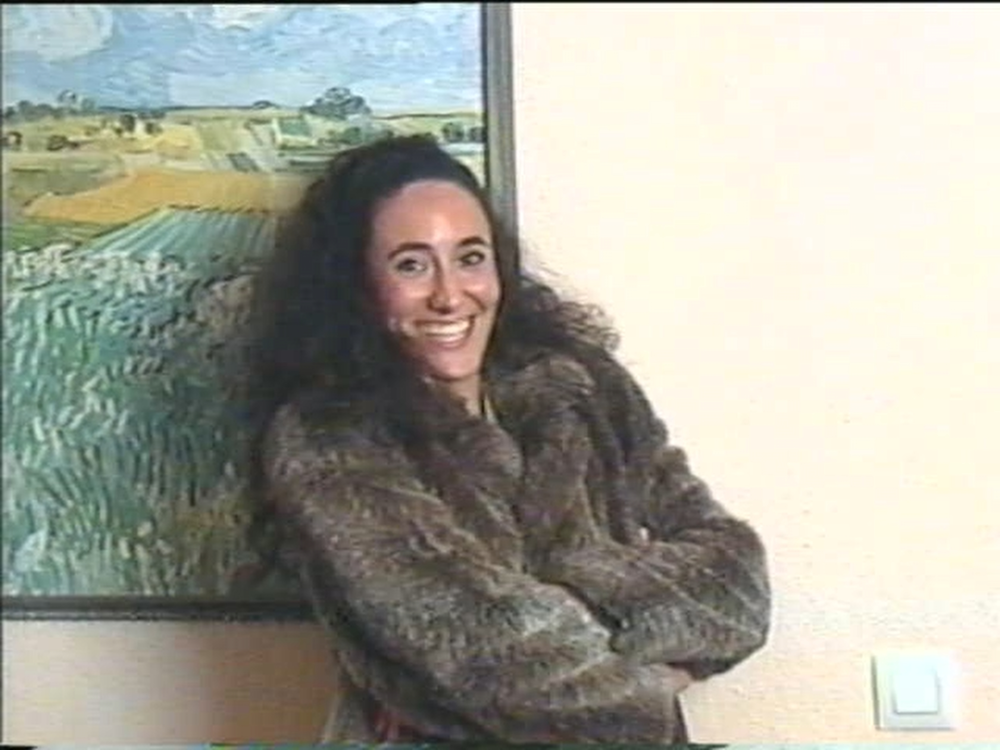
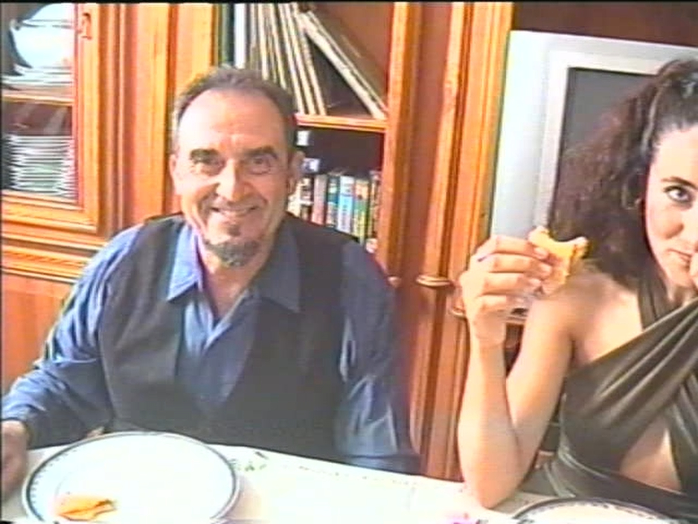
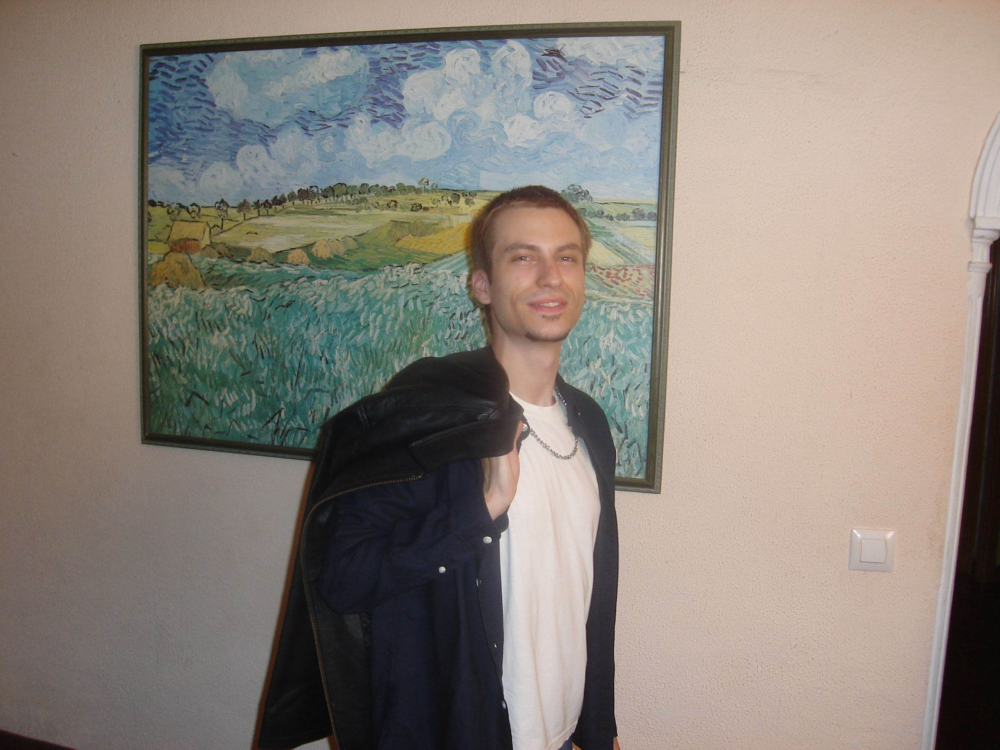
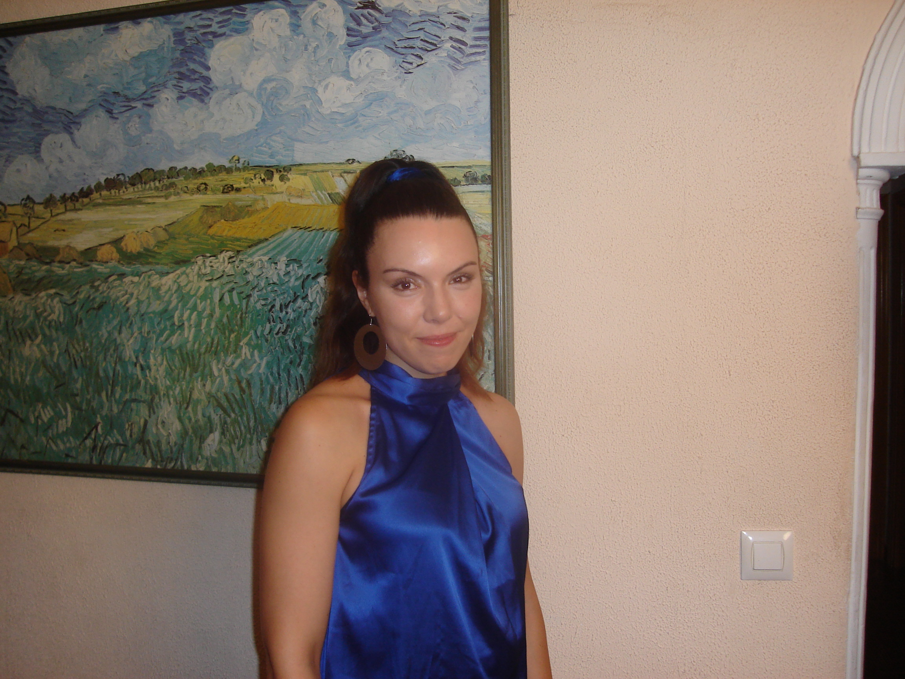
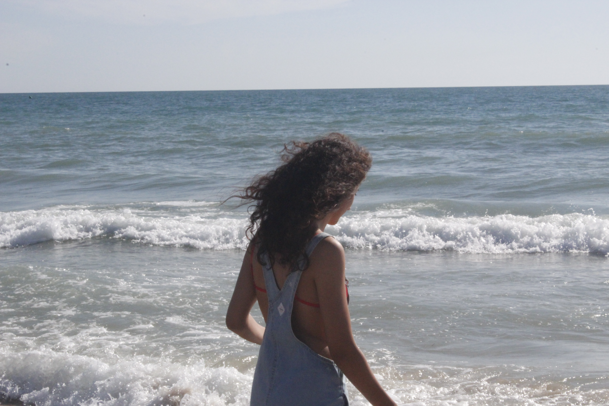

La historia
Verano de 2005. Mónica y su padre, Jesús, van a la playa de Camposoto. Él lleva su videocámara en la mano y graba a su hija para conservarla para siempre en una cinta.
Año Nuevo de 2005. Jesús lleva la videocámara a casa de su padre Antonio, para grabar a su familia e inmortalizar ese momento.
La canción
«Miradas» habla del amor de un padre por su hija.
Juanma Montero la compuso a la guitarra en el verano de 2021. Es el primer adelanto de su próximo álbum, que llevará el mismo nombre.
Elenco
- Marina MoraMónica

- Juan PoloJesús

- Adrián LópezJose Ramón

- Andrea CabreraSilvia

- Pedro A. López RayaAbuelo Antonio

- Juanma MonteroEl cantante

Equipo técnico
- Dirección
- Juanma Montero
- Guion
- Juanma Montero
- Dirección de fotografía
- Lolo Moreno
- Producción
- Daniela Labarrera
- Música
- Juanma Montero
- Letra
- Juanma Montero
- Arreglos y producción musical
- Amador Casado
- Montaje
- Juanma Montero
- Dirección de arte
- Mery Silva
- Vestuario
- Marina Vera
- Maquillaje y peluquería
- Celeste López
- Etalonaje
- Lolo Moreno
- Foto fija
- Sonia Parra
- Ayudante de arte
- Paula Montero
Galería

1 / 8